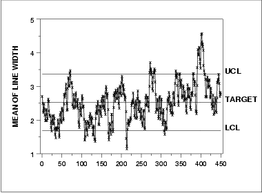
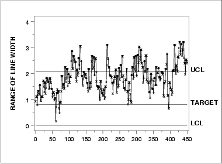
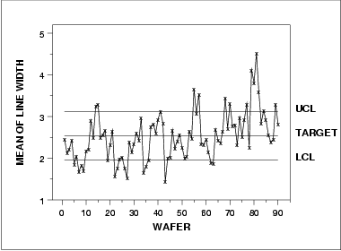
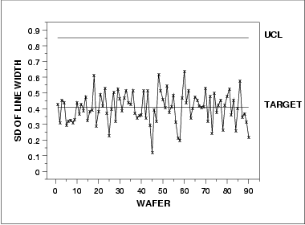
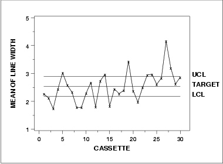
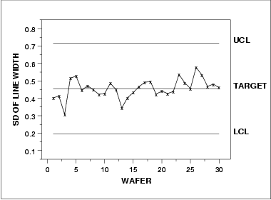

|
6.
Process or Product Monitoring and Control
6.6. Case Studies in Process Monitoring 6.6.1. Lithography Process
|
|||||||||||
| Control charts for subgroups | The resulting classical Shewhart control charts for each possible subgroup are shown below. | ||||||||||
| Site as subgroup | The first pair of control charts use the site as the subgroup. However, since site has a subgroup size of one we use the control charts for individual measurements. A moving average and a moving range chart are shown. | ||||||||||
| Moving average control chart |  | ||||||||||
| Moving range control chart |  | ||||||||||
| Wafer as subgroup | The next pair of control charts use the wafer as the subgroup. In this case, the subgroup size is five. A mean and a standard deviation control chart are shown. | ||||||||||
| Mean control chart |  | ||||||||||
| SD control chart |

There is no LCL for the standard deviation chart because of the small subgroup size. |
||||||||||
| Cassette as subgroup | The next pair of control charts use the cassette as the subgroup. In this case, the subgroup size is 15. A mean and a standard deviation control chart are shown. | ||||||||||
| Mean control chart |  | ||||||||||
| SD control chart |  | ||||||||||
| Interpretation |
Which of these subgroupings of the data is correct? As you can see,
each sugrouping produces a different chart. Part of the answer lies
in the manufacturing requirements for this process. Another aspect
that can be statistically determined is the magnitude of each of
the sources of variation. In order to understand our data structure
and how much variation each of our sources contribute, we need to
perform a variance component analysis. The variance component analysis
for this data set is shown below.
|
||||||||||
| Variance Component Estimation |
If your software does not generate the variance components directly,
they can be computed from a standard analysis of variance output by
equating mean squares (MS) to
expected mean squares (EMS).
The sum of squares and mean squares for a nested, random effects model are shown below.
Degrees of Sum of
Source Freedom Squares Mean Squares
-------------------- ---------- --------- ------------
Cassette 29 127.40293 4.3932
Wafer(Cassette) 60 25.52089 0.4253
Site(Cassette, Wafer) 360 63.17865 0.1755
The expected mean squares for cassette, wafer within cassette, and site within cassette and wafer, along with their associated mean squares, are the following.
4.3932 = (3*5)*Var(cassettes) + 5*Var(wafer) + Var(site) 0.4253 = 5*Var(wafer) + Var(site) 0.1755 = Var(site) Solving these equations, we obtain the variance component estimates 0.2645, 0.04997, and 0.1755 for cassettes, wafers, and sites, respectively. All of the analyses in this section can be completed using R code. |
||||||||||